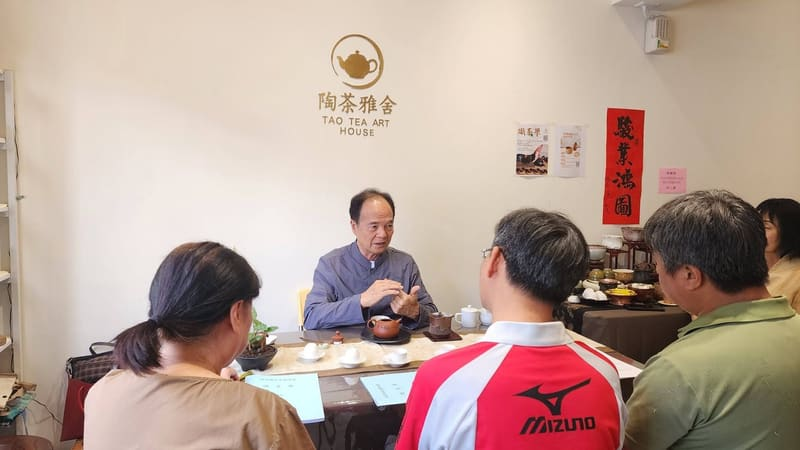
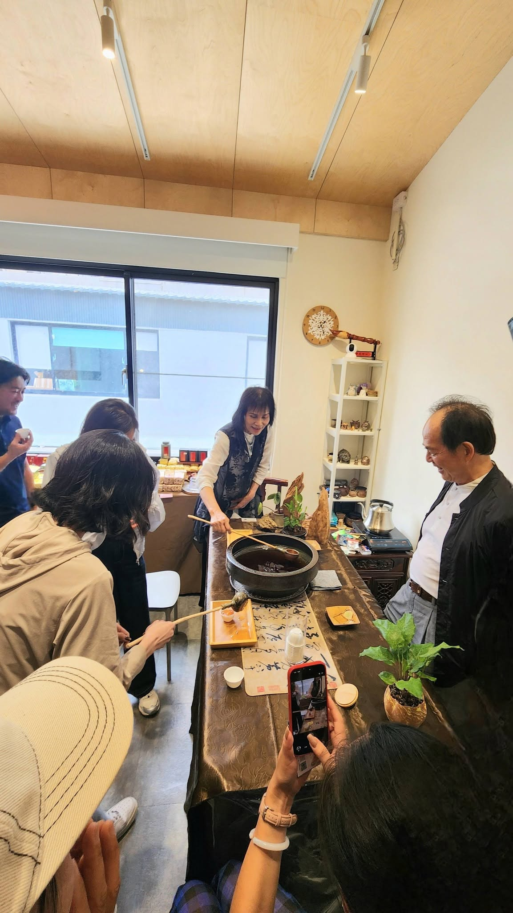
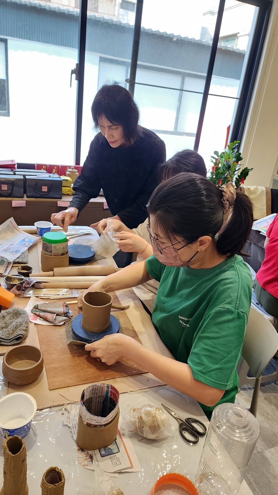
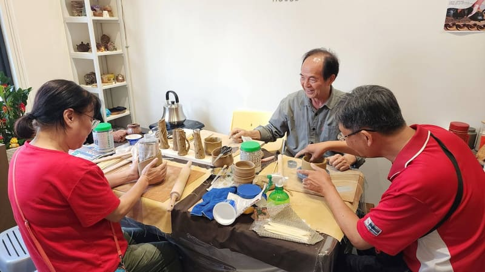

✦ 茶藝入門體驗
你不是不會泡茶，只是少了一個關鍵 ❓
那個關鍵，就是水溫 × 比例 × 時間的完美平衡。
這堂課，帶你用最簡單的方法，喝懂一杯好茶。
不是艱深理論，而是你回家就能用、用得出差別的實學。
我們對教學有信心，更對你的學習負責。
問到會為止 👍👍 —— 這就是陶茶雅舍的保固承諾。
✦ 完全不會泡茶，想從零開始的初學者
✦ 買了茶葉卻總是泡不出味道的愛茶人
✦ 對茶席文化有興趣，想體驗中式美學的你
✦ 想在週末給自己一段靜心時光的朋友
由田清標老師與江秝笙老師（高級茶藝師證照）共同授課。30 餘年手捏茶壺與茶藝教學經歷，曾受電視台專訪、中國時報報導，並於全台文化中心、美術館聯展超過 20 場次。
看看學員怎麼在這裡找到茶的溫度




職人師資 × 小班教學 × 課後保固
田清標、江秝笙老師，30 餘年手捏壺創作與茶藝教學經歷。
老師看得見每個學員，個別指導、當場修正。
學不會歡迎再回來問，問到會為止 —— 我們對教學負責。
帶一包茶葉回家，下課後還能繼續練習。
填寫 Google 表單完成報名，我們會與您聯繫確認